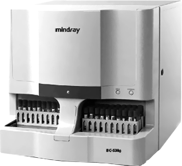

Bc-5380 hematología

DESCRIPCIÓN:
Mediante tres técnicas estándar, el nuevo analizador automático para hematología BC-5380 puede proporcionar unos tests rápidos y fiables a partir de sólo 20 ul de sangre. Para ahorrar tiempo y aumentar la automatización de las revisiones, cuenta con un cargador automático que aloja 30 tubos al mismo tiempo y ofrece un rendimiento de 60 muestras por hora. Con el conocido software para Windows, puede realizar los tests habituales, gestionar los resultados de los pacientes, definir la limpieza automática y realizar la conexión con un servidor LIS de un modo sencillo. El BC-5380 es la opción ideal para agilizar el flujo de trabajo diario.
CARACTERÍSTICAS:
• Diferencial de dispersión láser que garantiza una excelente precisión
• Dispersión de láser semiconductor para la diferenciación de los glóbulos blancos según su tamaño y la complejidad de los gránulos
• El algoritmo de clúster patentado permite separar los grupos de células con una gran precisión
• La intuitiva información de marcación ayuda a detectar las muestras anómalas
Muestreo automatizado y versátil
• El cargador automático de 30 tubos permite una carga continua
• Compartimento de tubo cerrado independiente para muestras STAT y capilares
• Admite tubos microtainer seleccionados
Para obtener un informe de cinco poblaciones, sólo se necesitan 20 ul de sangre y 1 min
• Admite muestras de sangre completa y de sangre capilar
• Muestreo de sangre de 20 ul para tests CBC+DIFF y de 15 ul para tests CBC
• Rendimiento de hasta 60 muestras por hora
• Consumo reducido de reactivos
Software intuitivo para un funcionamiento y un mantenimiento sencillos
• Parámetros de personalización del intervalo de referencia, de los estilos de informe y del programa de limpieza automática
• Monitorización CC día a día
• Conexión LIS bidireccional
DATOS COMPLEMENTARIOS: Para mayor información llamar a:
COMERCIALIZADORA DIFARMALAV, S.A. DE C.V.
Teléfonos: 01 222 594-3465, 755-3753, 755-3752
Lada sin costo: 01 800 DIFARMA, 01 800 161-6707
(01 800 343 2762)
e-mail: difarmaventas@hotmail.com
www.difarmalav.com.mx